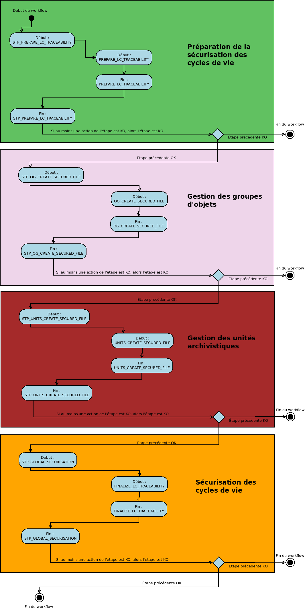

Workflow de création de journal des cycles de vie sécurisé¶
Introduction¶
Cette section décrit le processus (workflow) permettant la sécurisation des journaux du cycle de vie mis en place dans la solution logicielle Vitam. Le workflow mis en place dans la solution logicielle Vitam est défini dans le fichier “DefaultLifecycleTraceability.json”. Ce fichier est disponible dans : sources/processing/processing-management/src/main/resources/workflows.
Processus de sécurisation des journaux des cycles de vie (vision métier)¶
Le processus de sécurisation des journaux des cycles de vie consiste en la création d’un fichier .zip contenant l’ensemble des journaux du cycle de vie à sécuriser, ainsi que le tampon d’horodatage.
Ce fichier zip est ensuite enregistré sur les offres de stockage, en fonction de la stratégie de stockage.
Sécurisation des journaux du cycle de vie (LOGBOOK_LC_SECURISATION)¶
La fin du processus peut prendre plusieurs statuts :
Statuts :
OK : les journaux du cycle de vie ont été sécurisés (LOGBOOK_LC_SECURISATION.OK = Succès de la sécurisation des journaux du cycle de vie)
- WARNING : il n’y pas de nouveaux journaux à sécuriser depuis la dernière sécurisation (LOGBOOK_LC_SECURISATION.WARNING = Avertissement lors de la sécurisation des journaux du cycle de vie)
KO : pas de cas KO
FATAL : une erreur technique est survenue lors de la sécurisation du journal des opérations (LOGBOOK_LC_SECURISATION.FATAL = Erreur fatale lors de la sécurisation des journaux du cycle de vie)
Préparation des listes des cycles de vie¶
- Étape 1 - STP_PREPARE_LC_TRACEABILITY - distribution sur REF
- Liste cycles de vie à sécuriser - PREPARE_LC_TRACEABILITY - fichier out : GUID/Operations/lastOperation.json & Operations/traceabilityInformation.json
- Type : bloquant
- Règle : récupération des journaux des cycles de vie à sécuriser et récupération des informations concernant les dernières opérations de sécurisation.
- Statuts :
- OK : les fichiers des cycles de vie ont été exportés (dans UnitsWithoutLevel et ObjectGroup) ainsi que les informations concernant les dernières opérations de sécurisation (PREPARE_LC_TRACEABILITY.OK=Succès du listage des journaux du cycle de vie)
- KO : les informations sur la dernière opération de sécurisation n’ont pas pu être obtenues / exportées, ou un problème a été rencontré avec un cycle de vie (PREPARE_LC_TRACEABILITY.KO=Échec du listage des journaux du cycle de vie)
- FATAL : une erreur technique est survenue (PREPARE_LC_TRACEABILITY.FATAL=Erreur fatale lors du listage des journaux du cycle de vie)
- Étape 2 - STP_OG_CREATE_SECURED_FILE - distribution sur LIST - fichiers présents dans GUID/ObjectGroup
- Traitement des cycles de vie groupe d’objets - OG_CREATE_SECURED_FILE
- Type : bloquant
- Règle : application de l’algorithme pour créer les fichiers sécurisés des cycles de vie des groupes d’objets, journal par journal, et génèration du fichier sécurisé.
- Statuts :
- OK : le fichier sécurisé pour le cycle de vie en cours a été généré (STP_OG_CREATE_SECURED_FILE.OK=Succès du processus de sécurisation des groupes d’objets)
- WARNING : il n’y a pas de nouveaux journaux à sécuriser (STP_OG_CREATE_SECURED_FILE.WARNING=Avertissement lors du du processus de sécurisation des groupes d’objets)
- KO : le fichier pour le groupe d’objet n’a pas pu être trouvé (STP_OG_CREATE_SECURED_FILE.KO=Échec du processus de sécurisation des groupes d’objets)
- FATAL : une erreur technique est survenue lors de la génération des fichiers sécurisés (STP_OG_CREATE_SECURED_FILE.FATAL=Erreur fatale lors du processus de sécurisation des groupes d’objets)
- Vérification de la liste des éléments à traiter (OBJECTS_LIST_EMPTY)
- Type : non applicable
- Règle : vérification de la présence ou non d’objets à traiter. Cette action ne s’inscrit dans le journal des opérations uniquement dans les cas fatal et warning.
- Statuts :
- WARNING : il n’y a pas de nouveaux journaux à sécuriser (OBJECTS_LIST_EMPTY.WARNING = Avertissement lors de l’établissement de la liste des objets : il n’y a pas d’objet pour cette étape)
- FATAL : une erreur technique est survenue lors de la génération des fichiers sécurisés (OBJECTS_LIST_EMPTY.FATAL = Erreur fatale lors de l’établissement de la liste des objets)
- Étape 3 - STP_UNITS_CREATE_SECURED_FILE - distribution sur LIST - fichiers présents dans GUID/ObjectGroup
- Traitement des cycles de vie pour les unités archivistiques - UNITS_CREATE_SECURED_FILE
- Type : bloquant
- Règle : application de l’algorithme pour créer les fichiers sécurisés des cycles de vie des unités archivistiques, journal par journal, et génèration du fichier sécurisé.
- Statuts :
- OK : le fichier sécurisé pour le cycle de vie en cours a été généré (UNITS_CREATE_SECURED_FILE.OK=Succès du processus de sécurisation des journaux du cycle de vie des unités archivistiques)
- WARNING : il n’y a pas de nouveaux journaux à sécuriser (STP_UNITS_CREATE_SECURED_FILE.WARNING = Avertissement lors du processus de sécurisation des unités archivistiques)
- KO : le fichier pour le groupe d’objet n’a pas pu être trouvé (UNITS_CREATE_SECURED_FILE.KO=Échec du processus de sécurisation des journaux du cycle de vie des unités archivistiques)
- FATAL : une erreur technique est survenue lors de la génération des fichiers sécurisés (UNITS_CREATE_SECURED_FILE.FATAL=Erreur fatale lors du processus de sécurisation des journaux du cycle de vie des unités archivistiques)
- Vérification de la liste des éléments à traiter (OBJECTS_LIST_EMPTY)
Il s’agit du même contrôle que l’étape 2
- Étape 4 - STP_GLOBAL_SECURISATION - distribution sur REF
- Finalisation de la sécurisation - FINALIZE_LC_TRACEABILITY - fichier présent dans : GUID/Operations/lastOperation.json & Operations/traceabilityInformation.json
- Type : bloquant
- Règle : récupération des différents fichiers générés aux étapes 2 et 3 puis calcul du tampon d’horodatage
- Statuts :
- OK : le fichier zip final a été créé et sauvegarder sur les offres de stockage (FINALIZE_LC_TRACEABILITY.OK=Succès de la sécurisation des journaux du cycle de vie)
- KO : le fichier zip n’a pas pu être généré ou sauvegardé sur les offres (FINALIZE_LC_TRACEABILITY.KO=Échec de la sécurisation des journaux du cycle de vie)
- FATAL : une erreur technique est survenue lors de la création du fichier zip final et de la sauvegarde sur les offres de stockage (FINALIZE_LC_TRACEABILITY.FATAL=Erreur fatale lors de la sécurisation des journaux du cycle de vie)
D’une façon synthétique, le workflow est décrit de cette façon :
Diagramme d’activité du workflow de sécurisation des cycles de vie